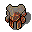

水晶の鎧 Crystal plate armour
英語版 CrawlWiki の記事「Crystal plate armour」(0.32 向け、2024-10-23 版)の翻訳です。原文の著者は編集履歴をご覧ください。
この記事は 0.32 の時点の内容で、最新の 0.34 とは違うところがあるかもしれません。
| 信じ難いほどの重さだが、極めて防御力の高い結晶質の鎧だ。 |
水晶の鎧は手に入る胴鎧の中で最も重い部類に入り、重さはゴールドドラゴンの鱗一式と並んで一番だ。基本の AC はゲーム中で最も高いが、重さによるペナルティも厳しい。とても珍しい。
戦略
近接戦に強い力自慢にとって、水晶の鎧はゲーム終盤まで通用する強力な防具だ。多くのキャラクターはゴールドドラゴンの鱗一式の耐性のほうを好むだろうが、こちらも倒すべきゴールドドラゴンに出会うまでは同じくらい珍しい。それ以外のキャラクターにとっては重すぎる。エクステンデッドまで進んだキャラクターでも、これを着て呪文を唱えるのは難しい。
もっとも、水晶の鎧が見つかるころには、優れたアーティファクトの防具や、高く強化された「格下」の防具(プレートアーマーなど)をもう見つけているかもしれない。こうした防具は、ただの +0 の水晶の鎧より役に立つことが多い。普通のプレートアーマーのままゲームを終えるのも、まったくおかしなことではない。
変更履歴
| 画像 | |
|---|---|
| 通常品 | |
| 魔法の品 | |
| アーティファクト | |
| 固定アーティファクト | |
| 橙水晶の鎧 |  |

| 防具 | |
|---|---|
| 胴鎧 | レザーアーマー • リングメイル • スケイルメイル • 鎖かたびら • プレートアーマー • 水晶の鎧
ローブ • 獣の皮 • トロル革の鎧 • スチームドラゴンの鱗一式 • アシッドドラゴンの鱗一式 • |
| その他 | 帽子 • 兜 • クローク • スカーフ • 手袋 • ブーツ • 馬甲 |
| 盾 | バックラー • カイトシールド • タワーシールド • オーブ |